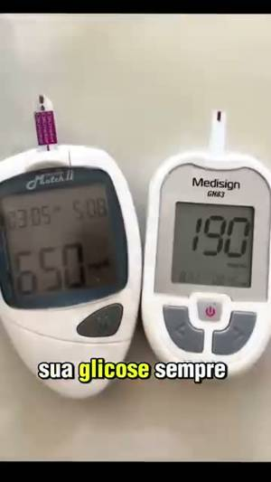

angelica-1#1Já usado · não validado

Receita caseira para a glicose
“Açafrão, abacate e limão. Essa é a receita caseira que praticamente reverte o diabetes...”
14aberturas
21arquivos
50dup máx
45dias
Onde o corpo começa: entre 3 e 8 s, conforme a abertura; medido pela fala: 58 a 67% da fala depois coincide entre aberturas diferentes. Vai até o fim do vídeo (1 min 17 s).
Dor: diabetes e glicose alta (adaptar para a nossa)
Mecanismo: receita caseira (vinagre de maçã, açafrão, abacate) e "os parasitas que se alimentam da insulina"
Formato: mulher falando para a câmera, cortes de ingredientes e glicosímetros
Já usado em teste e não validado (0 vendas; a régua é 4). M18: 3 leads, 0 vendas; M19: 7 leads, 0 vendas (tráfego até 22/10; gasto ainda não informado pelo Léo)
Angelica Top Saude · BR · Abrir o original ↗